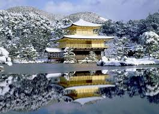
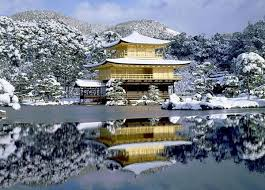
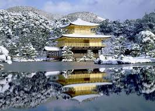

No país as paisagens arrebatadoras, com montanhas, rios e florestas tomando o horizonte. O Monte Fuji, um vulcão ativo que é considerado a montanha mais alta do país, fornece uma visão única no nascer do sol, ao lado do lago Kawaguchi. Outro exemplo é o Hoshitoge Rice Terraces, em Tokamachi, com os tradicionais campos de arroz japoneses.
O que nós conhecemos indo nos restaurantes japoneses de nosso bairro é apenas uma fração de tudo que a gastronomia do país pode oferecer: embora o sushi e sashimi sejam ícones da culinária japonesa, a comida de lá vai muito além, com diferentes tipos de legumes e macarrão com temperos regionais, que geralmente não são encontrados no lado ocidente do globo. Vá a um ryotei, tradicional restaurante japonês, e lembre-se sempre que lá não tem garfo e faca, só se come com típicos hashis.
“A cidade dos mil templos”. Assim é chamada Quioto, capital do império japonês até meados do século 19. E a cidade faz jus ao nome, com diversos e diferentes templos podendo ser vistos em praticamente todas as ruas do destino. Um dos mais conhecidos da cidade é o Kinkaku-Ji, ou o Templo do Pavilhão Dourado, monumento budista que fica rodeado por um lago que espelha a construção. A característica, porém, não é exclusividade de lá, sendo comum em todo Japão ter templos atravessando a cidade, inclusive na gigante Tóquio, considerada a maior cidade do mundo.
